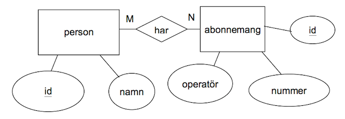

För att man ska ha nytta av förhållanden mellan tabeller måste man kunna ställa SQL-frågor till flera tabeller samtidigt. Om vi tex vill veta telefonnumret till en viss person måste vi fråga både tabellen person och abonnemang. För att ”koppla ihop” tabellerna och fråga båda tabellerna använder vi INNER JOIN:
SELECT * FROM person INNER JOIN abonnemangResultat blir alla möjliga sätt att kombinera tabellerna person och abonnemang, och vi får kombinationer som vi inte är intresserade av:
| namn | personnummer | nummer | operator | personnummer |
|---|---|---|---|---|
| Bo Peterson | 6502019999 | 046-123456 | Tele 2 | 6502019999 |
| Sven Svensson | 7312125555 | 046-123456 | Tele 2 | 6502019999 |
| Bo Peterson | 6502019999 | 040-654321 | Telia | 7312125555 |
| Sven Svensson | 7312125555 | 040-654321 | Telia | 7312125555 |
| Bo Peterson | 6502019999 | 040-6657000 | Telia | 6502019999 |
| Sven Svensson | 7312125555 | 040-6657000 | Telia | 6502019999 |
| Bo Peterson | 6502019999 | 0739-654321 | Comviq | 7312125555 |
| Sven Svensson | 7312125555 | 0739-654321 | Comviq | 7312125555 |
| Bo Peterson | 6502019999 | 070-654321 | Telenor | 7312125555 |
| Sven Svensson | 7312125555 | 070-654321 | Telenor | 7312125555 |
Detta resultat är inte särskilt användbart, men blir det plötsligt om vi tillfogar villkor på nyckel-kolumnerna. Vi kan börja med att titta på alla markerade rader där primärnyckeln i person är lika med främmande nyckeln i abonnemang.
Vi kan välja ut de raderna med följande SQL-sats:
SELECT * FROM person INNER JOIN abonnemang
ON person.personnummer=abonnemang.personnummer| namn | personnummer | nummer | operator | personnummer |
|---|---|---|---|---|
| Bo Peterson | 6502019999 | 046-123456 | Tele 2 | 6502019999 |
| Sven Svensson | 7312125555 | 040-654321 | Telia | 7312125555 |
| Bo Peterson | 6502019999 | 040-6657000 | Telia | 6502019999 |
| Sven Svensson | 7312125555 | 0739-654321 | Comviq | 7312125555 |
| Sven Svensson | 7312125555 | 070-654321 | Telenor | 7312125555 |
Observera att vi anger person.personnummer och abonnemang.personnummer för att särskilja kolumner i olika tabeller men med samma namn. Vi har nu fått en förteckning över alla telefonnummer.
Om vi vill ha alla telefonnummer till Sven Svensson lägger vi till ytterligare villkor:
SELECT * FROM person INNER JOIN abonnemang
ON person.personnummer=abonnemang.personnummer
WHERE namn='Sven Svensson'| namn | personnummer | nummer | operator | personnummer |
|---|---|---|---|---|
| Sven Svensson | 7312125555 | 040-654321 | Telia | 7312125555 |
| Sven Svensson | 7312125555 | 0739-654321 | Comviq | 7312125555 |
| Sven Svensson | 7312125555 | 070-654321 | Telenor | 7312125555 |
Om vi bara är intresserade av namn, nummer och operatör byter vi ut stjärnan mot de kolumner vi vill visa:
SELECT namn,nummer,operator FROM person
INNER JOIN abonnemang
ON person.personnummer=abonnemang.personnummer
WHERE namn='Sven Svensson'| namn | nummer | operator |
|---|---|---|
| Sven Svensson | 040-654321 | Telia |
| Sven Svensson | 0739-654321 | Comviq |
| Sven Svensson | 070-654321 | Telenor |
Vi utgår från ett tidigare exempel med person och abonnemang men utökar nu till en många-till-många-relation så att varje person kan ha flera abonnemang och ett abonnemang kan delas av flera personer. För enkelhetens skull inför vi också kolumnen id som primärnyckel i både person och abonnemang.

Hur översätter man detta till tabeller i en relationsdatabas?
Vi blir nu tvungna att införa en mellantabell som knyter samman person och abonnemang.
Vi inför en mellantabell personabonnemang med primärnycklarna från både person och abonnemang.
Tabellstrukturen blir:
person
| namn | id |
|---|---|
| Bo Eriksson | 67 |
| Sven Svensson | 73 |
| Anna Eriksson | 69 |
abonnemang
| id | nummer | operatör |
|---|---|---|
| 1 | 046-123456 | Tele 2 |
| 2 | 040-654321 | Telia |
| 3 | 040-6657000 | Telia |
personabonnemang
| personid | abonnemangid |
|---|---|
| 67 | 1 |
| 67 | 2 |
| 73 | 3 |
| 69 | 1 |
I personabonnemang kan båda kolumnerna innehålla dubbletter. Ingen kolumn kan då ensam vara primärnyckel. De två kolumnerna utgör tillsammans primärnyckeln!
För att få en lista över alla telefonnummer och namn kan vi skriva
SELECT person.namn,abonnemang.nummer FROM person
INNER JOIN personabonnemang
ON person.id=personid
INNER JOIN abonnemang
ON abonnemang.id=abonnemangidFör att få alla nummer till Bo Eriksson utökar vi frågan:
SELECT person.namn,abonnemang.nummer FROM person
INNER JOIN personabonnemang
ON person.id=personid
INNER JOIN abonnemang
ON abonnemang.id=abonnemangid
WHERE namn='Bo Eriksson'Vi har nu sett de vanligaste exemplen på översättning från ER-diagram till tabeller.